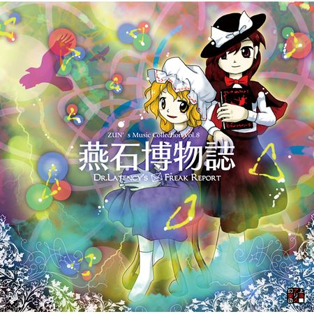
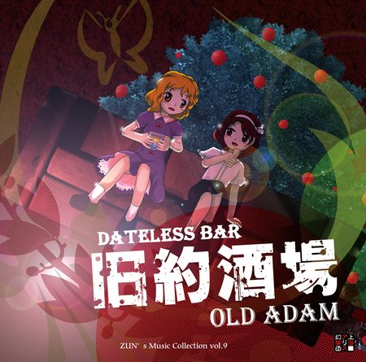

ZUN已发布了11张音乐专辑，每个专辑都包含再编曲的旧曲目以及新的原创曲目。除编号为5.5的专辑未知之花 魅知之旅和编号为9.5的专辑虹色的北斗七星外，每个专辑都包含由ZUN亲自编写的附赠『故事』。

- 燕石博物誌 ～ Dr.Latency's Freak Report.（えんせきはくぶつし，Enseki Hakubutsushi）
- 本CD是ZUN's Music Collection的第九张（包括Vol5.5）音乐CD（Vol.8），也是第七张附带了秘封俱乐部的故事的CD。
- 制作方 上海爱丽丝幻乐团
- 发行日期 2016年5月8日 （第十三回 博丽神社例大祭）
- 音轨数 11
- 总时长 43:11
- 编号 ZCDS-0015
- 售价 会场售价：500日元
- 通贩售价：700日元

- 旧約酒場 ～ Dateless Bar "Old Adam".（きゅうやくさかば，Kyuuyaku Sakaba）
- 本CD是ZUN's Music Collection的第十张（包括Vol5.5）音乐CD（Vol.9），也是第八张附带了秘封俱乐部的故事的CD。
- 制作方 上海爱丽丝幻乐团
- 发行日期 2016年8月13日 （Comic Market 90）
- 音轨数 10
- 编号 ZCDS-0016
- 售价 会场售价：500日元
- 通贩售价：700日元不含税